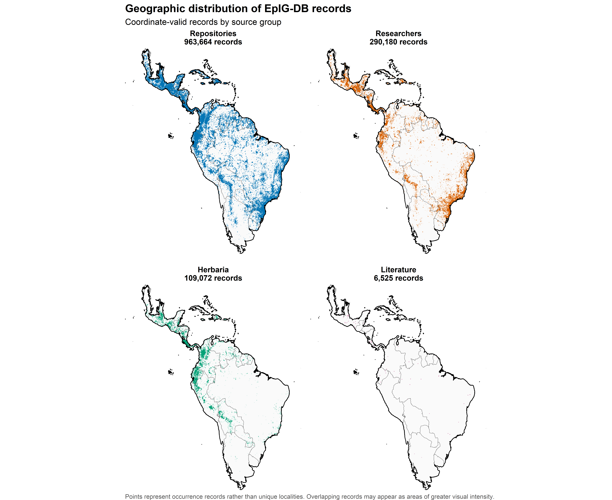
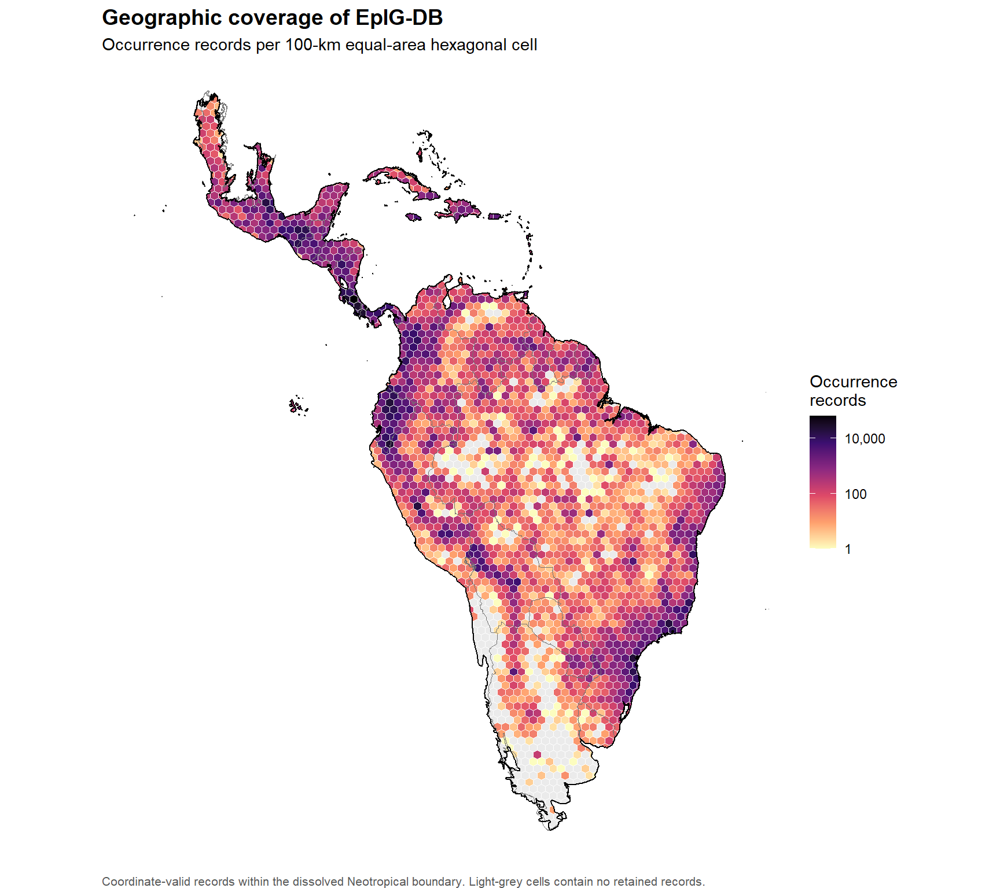

| Layer | Purpose | Features | Invalid geometries before repair | EPSG |
|---|---|---|---|---|
| Neotropical boundary | Analysis mask and outer boundary | 2 | 0 | 4,326 |
| Countries | Political reference boundaries | 58 | 1 | 4,326 |
| Biogeographic provinces | Morrone biogeographic units for subsequent maps | 60 | 0 | 4,326 |
Occurrence Maps
Proposed Design
- Prepare one reusable set of coordinate-valid records within the Neotropical boundary.
- Display geographic distribution as rasterized point panels separated by source group.
- Aggregate records into an equal-area hexagonal grid rather than plot 1.37 million overlapping points.
- Use the dissolved Neotropical boundary as the mask and outline.
- Use a logarithmic color scale for record counts.
- Retain empty areas so sampling gaps remain visible.
- Report the number of coordinate-valid records used and records outside the Neotropical boundary.
- Avoid exposing individual occurrence coordinates in the rendered output.
Loading Data
The complete EpIG-DB 2.0 occurrence product is loaded locally. The raw database is employed only to prepare aggregate outputs and is not displayed in the HTML document.
Spatial Data Preparation
Spatial Layers
Three spatial inputs are prepared. the dissolved Neotropical boundary, country boundaries, and the Morrone biogeographic provinces. Invalid geometries are repaired before further spatial operations.
Table Table 1 documents the role, size, geometry status, and coordinate reference system of each spatial input. All three inputs use WGS84 (EPSG:4326).
Coordinate Screening
Longitude and latitude are converted to numeric values and evaluated sequentially. Records must have a complete coordinate pair, fall within the legal geographic ranges, and not represent the placeholder coordinate ‘(0, 0)’.
Table Table 2 shows how coordinate-valid subset was obtained. Exclusion categories are mutually exclusive within this sequence.
| Screening step | Records | Percentage of all records |
|---|---|---|
| All occurrence records | 1,372,136 | 100.0% |
| Excluded: incomplete or non-numeric coordinate pair | 1,715 | 0.1% |
| Excluded: coordinate outside legal range | 0 | 0.0% |
| Excluded: placeholder coordinate (0, 0) | 0 | 0.0% |
| Retained: coordinate-valid records | 1,370,421 | 99.9% |
Projected Neotropical Dataset
Coordinate-valid records are projected to Equal Earth (EPSG:8857), filtered by the dissolved Neotropical boundary, and assigned to a 100-km equal-area hexagonal grid. Employing an equal-are projection makes the grid cells spatially comparable across the study region.
Geographic Distribution
Distribution by Data Source
The geographic distribution of coordinate-valid records was compared among four broad source groups. Separate panels were used because repositories account for most recods and would obscure less sources in a single overlaid map. All panels use the same projection, geographic extent, point size, and transparency.

Sampling Density
Spatial Aggregation
Records retained within tyhe Neotropical boundary are assigned to a 100-km hexagonal grid in the Equal Earth Projection. Interior cells are spatially comparable; cells intersecting the outer biundary are clipped for display.
Table Table 3 reports the final map denominator and verifies that all records inside the study boundary were assigned to grid cells.
| Metric | Value |
|---|---|
| Coordinate-valid records | 1,370,421 |
| Records inside the Neotropical boundary | 1,369,441 |
| Records outside the Neotropical boundary | 980 |
| Records assigned to grid cells | 1,369,441 |
| Occupied grid cells | 2,136 |
| Empty grid cells | 353 |
| Cell-assignment check | Passed |
Sampling Density <ap
Figure Figure 2 displays the number of records in each occupied cell. The logarithmic color transformation preserves differences across a highly differentiated count distribution. Light-grey cells represent sampled-area gaps with no retained occurrence records.

Interpretation
The map summarizes geographic sampling intensity rather than species richness or biological abundance. Cells with many records may reflect greater collection effort, or repeated sampling. Consequently, geographic differences in record density should not be interpreted directly as differences in epiphyte diversity.
Species Richness by Biogeographic Province
The province-level choropleth will represent the number of distinct formally named species recorded within each Morrone biogeographic province. Morphospecies will be evaluated separately because their identifiers may be contributor-specific.
The workflow is divided into:
- audit the province layer and identify its province-name field;
- define the records and taxonomic key used to count species;
- assign eligible occurrences to province polygons; 4.validate unmatched and multiple spatial assignments;
- calculate species richness while retaining provinces with zero records; and
- construct an interpret the choropleth.
Stage 1: Province Layer Audit
We must check for valid geometry, empty features, and overlapping province interiors.
Table Table 4 lists the available province attributes. The field selected as the province identifier should be complete and should normally contain one distinct value per province feature.
| Attribute | Class | Non-missing features | Distinct non-missing values | Example values |
|---|---|---|---|---|
| OBJECTID | numeric | 60 | 60 | 1; 2; 3 |
| Provincias | character | 57 | 57 | Araucaria Forest province; Atacama province; Atlantic province |
| IDProv | character | 0 | 0 | |
| Region | character | 57 | 1 | Neotropical |
| Subregion | character | 57 | 5 | Chacoan; South American Transition Zone; Antillean |
| IDSubreg | character | 0 | 0 | |
| Dominio | character | 38 | 7 | Parana; Mesoamerican; Chacoan |
| IDDominio | character | 0 | 0 | |
| Area_km | character | 57 | 57 | 268459.892474321; 122518.721827285; 318663.938717835 |
| Perimetro | character | 57 | 57 | 7935.94906299966; 2231.80126228647; 14680.4424504175 |
| IDProvince | character | 0 | 0 | |
| Shape_Leng | numeric | 60 | 60 | 67.5957607297; 18.928575915; 124.601108259 |
| Shape_Area | numeric | 60 | 60 | 19.5196932431; 9.20181450569; 24.1146207964 |
Table Table 5 reports the geometric conditions that could affect the subsequent point-in-polygon operation.
| Metric | Value |
|---|---|
| Province features | 60 |
| Geometry types after repair | MULTIPOLYGON |
| Empty geometries | 0 |
| Invalid geometries after repair | 0 |
| Source-layer EPSG | 4326 |
| Overlapping feature pairs | 4 |
Stage 1b: Province-Layer Exceptions
The province layer contains 60 identified polygon features, but only 57 have province names. It also contains four pairs of overlapping interiors. these exceptions are examined before occurrences are assigned to provinces.
Display the unnamed features
| province_row | OBJECTID | Provincias | Region | Subregion | Dominio | Area_km | Shape_Area |
|---|---|---|---|---|---|---|---|
| 58 | 349 | NA | NA | NA | NA | NA | 2.58e-05 |
| 59 | 364 | NA | NA | NA | NA | NA | 3.40e-05 |
| 60 | 376 | NA | NA | NA | NA | NA | 2.81e-05 |
Display the overlap pairs
| Province ID 1 | Province 1 | Province ID 2 | Province 2 | Overlap area (km²) | Smaller province area (km²) | Overlap share of smaller province |
|---|---|---|---|---|---|---|
| 10 | Chaco province | 14 | Comechingones province | 0.01 | 7,386.6 | 0 |
| 10 | Chaco province | 19 | Esteros del Ibera province | 0.00 | 163,912.4 | 0 |
| 10 | Chaco province | 35 | Pampean province | 0.00 | 967,249.6 | 0 |
| 19 | Esteros del Ibera province | 35 | Pampean province | 0.00 | 163,912.4 | 0 |
Stage 1c: Check Occurrences Matches
st_intersects() returns the polygon row numbers matching each point, including boundary contacts. A point on a shared boundary may therefore match more than one province.
| Status | Records | Percentage |
|---|---|---|
| One named province only | 1,369,441 | 100.00% |
| One named province plus unnamed feature(s) | 0 | 0.00% |
| Multiple named provinces | 0 | 0.00% |
| Unnamed feature(s) only | 0 | 0.00% |
| No province match | 0 | 0.00% |
Stage 2: Define Records for Species Richness
Formally named species richness will be calculated from distinct cleaned scientificName values. Species, subspecies, varieties, and forms are included, following the species-level name structure established in the taxonomy audit (Section 3.2 from ExploratoryData_FR.qmd). Morphospecies and hybrids are reported separately from this count.
| Taxonomic group | Records | Percentage |
|---|---|---|
| Formally named species-level records | 1,360,944 | 99.38% |
| Morphospecies records | 8,483 | 0.62% |
| Hybrid records | 14 | 0.00% |
Stage 3: Calculate Species Richness by Province
| Province | Formally named occurrence records | Species richness |
|---|---|---|
| Paramo province | 113,908 | 5,374 |
| Cauca province | 95,311 | 4,438 |
| Guatuso-Talamanca province | 163,177 | 3,345 |
| Yungas province | 82,999 | 2,910 |
| Puntarenas-Chiriqui province | 60,277 | 2,641 |
| Magdalena province | 30,566 | 2,577 |
| Atlantic province | 136,736 | 2,523 |
| Rondonia province | 20,411 | 1,797 |
| Choco-Darien province | 22,456 | 1,786 |
| Parana Forest province | 64,693 | 1,739 |
| Chiapas Highlands province | 61,928 | 1,711 |
| Ucayali province | 12,832 | 1,706 |
| Veracruzan province | 83,992 | 1,642 |
| Pacific Lowlands province | 34,621 | 1,619 |
| Napo province | 25,279 | 1,452 |
| Western Ecuador province | 14,999 | 1,425 |
| Guianan province | 21,389 | 1,295 |
| Sabana province | 5,721 | 1,203 |
| Sierra Madre del Sur province | 16,987 | 1,066 |
| Cerrado province | 19,966 | 1,053 |
| Araucaria Forest province | 44,180 | 1,004 |
| Guajira province | 7,141 | 959 |
| Mosquito province | 13,969 | 958 |
| Imeri province | 14,410 | 953 |
| Xingu-Tapajos province | 10,008 | 935 |
| Puna province | 6,325 | 911 |
| Transmexican Volcanic Belt province | 27,062 | 899 |
| Guianan Lowlands province | 19,532 | 836 |
| Madeira province | 10,099 | 735 |
| Venezuelan province | 4,010 | 712 |
| Caatinga province | 12,129 | 632 |
| Southern Espinhaco province | 6,228 | 610 |
| Roraima province | 9,328 | 576 |
| Sierra Madre Oriental province | 12,066 | 568 |
| Hispaniola province | 7,346 | 537 |
| Balsas Basin province | 4,367 | 508 |
| Jamaica province | 5,454 | 483 |
| Cuban province | 7,538 | 451 |
| Pampean province | 4,823 | 434 |
| Chapada Diamantina province | 7,387 | 424 |
| Chaco province | 11,725 | 396 |
| Puerto Rico province | 4,584 | 353 |
| Trinidad province | 2,464 | 345 |
| Para province | 4,299 | 331 |
| Lesser Antilles province | 1,827 | 276 |
| Ecuadorian province | 544 | 249 |
| Yucatan Peninsula Province | 7,503 | 234 |
| Sierra Madre Occidental province | 1,622 | 174 |
| Desert province | 742 | 155 |
| Monte province | 738 | 131 |
| Esteros del Ibera province | 707 | 98 |
| Galapagos Islands province | 1,840 | 69 |
| Bahama province | 413 | 56 |
| Comechingones province | 77 | 17 |
| Cayman Islands province | 19 | 14 |
| Cuyan High Andean province | 45 | 14 |
| Atacama province | 145 | 6 |
Stage 4: Species Richness Map
Code
#| label: fig-province-richness
#| echo: false
#| fig-cap: "Observed formally named species richness across Morrone biogeographic provinces, based on coordinate-valid records within the Neotropical area."
#| fig-width: 10
#| fig-height: 8
#| fig-format: png
#| dpi: 300
# Attach the counts to the 57 named province polygons.
province_richness_map <- provinces_equal |>
mutate(province_id = OBJECTID) |>
filter(province_id %in% province_richness$province_id) |>
left_join(province_richness, by = "province_id") |>
mutate(
# Keep the numerical zero, but display zero-richness provinces in grey.
richness_fill = na_if(n_species, 0L)
)
ggplot() +
geom_sf(
data = province_richness_map,
aes(fill = richness_fill),
colour = "grey45",
linewidth = 0.15
) +
geom_sf(
data = neotropics_equal,
fill = NA,
colour = "black",
linewidth = 0.4
) +
scale_fill_viridis_c(
name = "Recorded\nspecies",
option = "viridis",
labels = scales::label_number(big.mark = ","),
na.value = "grey92"
) +
coord_sf(
crs = sf::st_crs(neotropics_equal),
datum = NA,
expand = FALSE
) +
labs(
title = "Species richness by biogeographic province",
subtitle = "Distinct formally named species recorded in EpIG-DB",
caption = paste0(
"Morphospecies and hybrids are counted separately. ",
"Grey provinces have no eligible records.\n",
"Observed richness reflects both species occurrence and sampling effort."
)
) +
theme_void(base_size = 11) +
theme(
plot.title = element_text(face = "bold", size = 14),
plot.subtitle = element_text(size = 11),
plot.caption = element_text(
size = 8, colour = "grey35", hjust = 0
),
legend.position = "right"
)